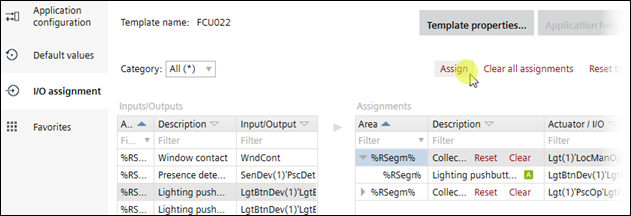

分配 I/O（模板）
I/O 也可以为每个房间单独分配。
Assigning I/O's (areas)

Assign I/O's for an application template
- Select an application template.
- Open Building > Application & device overview > Go to configuration.
- Configuration > Application configuration opens.
- Select Configuration > I/O assignment.
- The available sensors are displayed in the left table, and the actuators in the right table.
- Select the button in the left table.
- Select the corresponding button collection in the right table.
- Click Assign.
- The button is assigned to the button collection, and the I/O is assigned.
- Repeat steps 4 to 6, until all I/O's are assigned.
- The I/O's for the application template are assigned.

未分配 I/O 的房间和段继承父模板的 I/O 分配。
更改父模板时，不会删除为房间和段单独分配的 I/O。